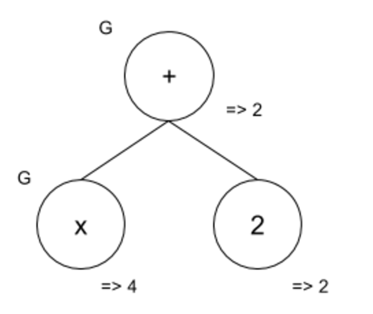
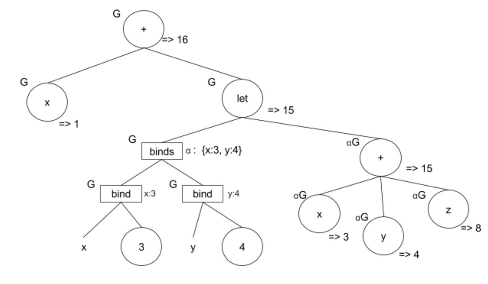
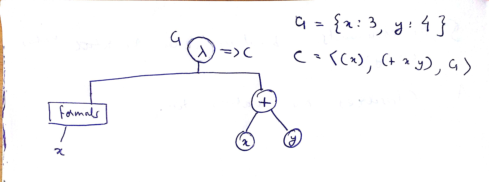
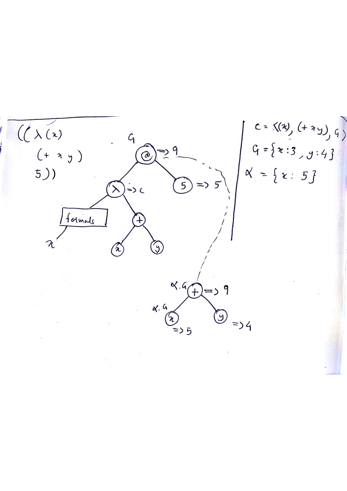
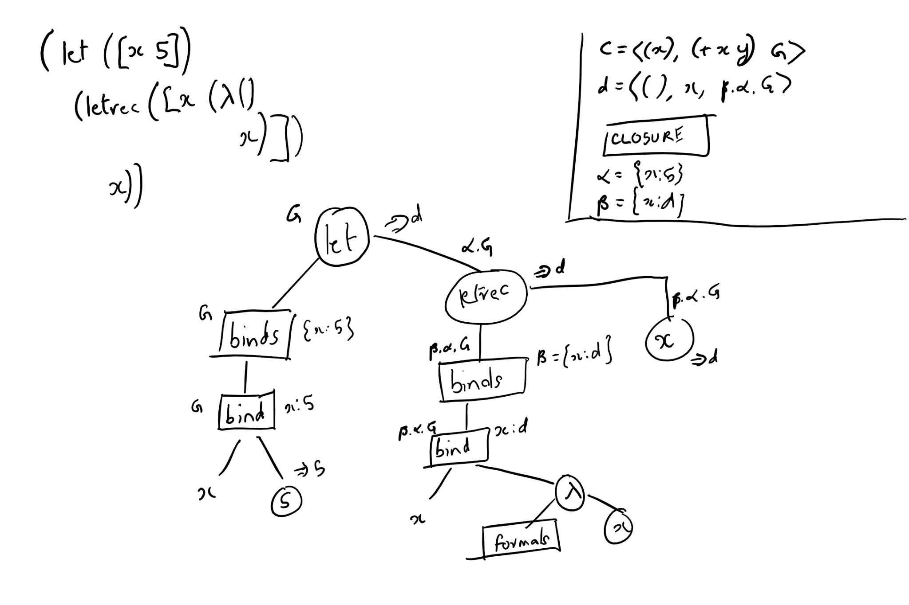
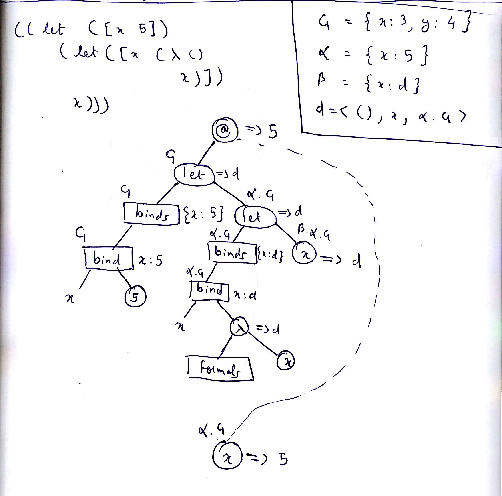

Program Evaluation via Annotation
Table of Contents
1 Introduction
We introduce a visual model for evaluating programs by annotation.
2 ASTs
ASTs are visual representation of programs. They are drawn as trees with the following notational convention:
- Expression (circle)
- Formals (rectangle)
- Binds (rectangle)
- Bind (square)
- Binding occurrence is an identifier, not an expression. It will have no shape enclosing it.
3 Evaluation of ASTs via annotation
For expressions with identifiers, evaluation requires annotating the expression with
- the environment in which it is evaluated.
- the value that it returns
3.1 Evaluation and Elaboration
- come in into an expression with an environment. Come out with a value. (Valuation)
- come in into a binds with an environment, come out with an environment. (Elaboration)
- come in into a bind with an environment. Come out with a binding. (Elaboration)
4 Expressions with identifiers
The AST annotation showing the
evaluation of the expression (+
x 2) in the environment G
equal to {x:4} is shown below:

5 Evaluating a let expression
let expressions represent
local bindings.
5.1 Structure of a let expression
A let expression has binds
and a body which is an
expression.
<let-exp> ::= (let (<bind> ...) <exp>) <bind> ::= (<id> <exp>)
5.2 Steps to evaluate a let expression
Assume that a let expression
is to be evaluated in an
environment G.
- Elaborate the
bindsof theletexpression in the environmentG. - This should yield an
environment
alpha. - Evaluate the body of the
letexpression in the environmentalpha . G
5.3 Example
G = {x:1, y:7, z:8, w:14};
Evaluate the following
expression in G:
(+ x
(let ([x 3] [y 4])
(+ x y z)))

6 Functions evaluate to closures
A function, or lambda
expression has the syntax
<function-expr> ::= (lambda (<id> ...) <exp>)
A lambda expression with list
of formals formals and body
expression body in an
environment env evaluates to a
closure, which is the triple
formalsbodyenv
6.1 Example
Consider the evaluation of the
lambda expression
(lambda (x)
(+ x y))
in the environment
G = {x:3, y:4}
The annotated AST is shown below:

6.2 Closures don't print in Racket
If you try the above example in
Racket, you will see that Racket
doesn't print the details of the
closure, it just says
#<procedure>.
> (define x 3) > (define y 4) > (lambda (x) (+ x y)) #<procedure>
The result is a black-box.
7 Evaluating an application expression
An application expression has an operator expression followed by zero or more argument expressions.
Here is the Racket concrete syntax for application.
<app-exp> ::= (<exp> <exp> ...)
7.1 Example
#lang racket (define x 3) (define y 4) ((lambda (x) (+ x y)) 5)
9
7.2 AST representation of an application expression
The root of an application AST
has a node labelled @. Note
that Racket's syntax itself does
not use any keyword to denote
application. Application is the
default if there is no keyword.
7.3 Steps involved in evaluating an application AST
Evaluating an application in an
environment G involves the
following steps:
- Evaluate the operator
expression to obtain a
closure
c. - Evaluate the argument expressions.
- Unwrap the closure
c. - Match formals in the closure
with arguments in the
application to create a new
environment
A. - Draw another copy of the body expression available in the closure.
- Link the root of the clone to the application vertex. This link allows the result of evaluating the body bubbles up to the original application node.
- Let
G' be the environment in the closurec. NoteG' may be different from the environmentGused to evaluated application expression - Compose
AwithG' and evaluate the body in the environmentA.G'.
7.4 Example
The evaluation of
((lambda (x)
(+ x y))
5)
in the environment G = {x: 3, y: 4}
is shown below:

8 Evaluating a letrec AST
8.1 Structure of a letrec expression
<letre-exp> ::= (letrec (<bind> ...) <exp>) <bind> ::= (<id> <exp>)
These are the steps in annotating a letrec
expression in an environment
r.
- Assume that the
bindssubtree of theletrecelaborates into an environmentbeta. Note: the only thing known aboutbetais its domain, which is the identifers in eachbindof theletrecexpression. - Mark the value against each
identifier in
betaas 'unitialized' (indicated as a blank). - Annotate the
bindsof theletrecwith the environmentbeta.r. - Continue to elaborate each
bind(left to right) under the environmentbeta.r. - After each elaboration of a
bind, updatebeta. - If at any time, the
evaluation requires looking
up
betafor an identifier that is as yet uninitialized inbeta, signal an error and abort the evaluation. - Otherwise, the elaboration
of the
bindsis complete. - Continue evaluation of the
body of the
letrecin the environmentbeta.r. - Return the result (if any)
of evaluating the body as
the result of the
letrecexpression. (This and the last one are identical to that oflet.)
8.2 Example
Consider the following expression
(let ([x 5]) (letrec ([x (lambda () x))] x))
evaluated in an environment G =
{x:3, y:4}.

9 Example comparing evaluation in let and letrec
The purpose of this example is
to illustrate the difference
between evaluation in let
expressions versus evaluation
in letrec expressions.
We consider programs differing
in exactly one keyword at one
place: a let replaced by a
letrec:
9.1 let example
The program involving let is
shown below. Note that the
let expression forms the
operator expression of the
(outermost) application:
((let ([x 5]) (letrec ([x (lambda () x)]) x)))
Running the above program yields
5.

9.2 letrec example
Here is the program with the
inner let replaced with a
letrec:
((let ([x 5]) (letrec ([x (lambda () x)]) x)))
The result of this program is a procedure, not 5.
Here is AST annotation for visualising the evaluation:

10 Lecture resources
10.1 2017-spring-iiith
- doubts thread
- ta notes of